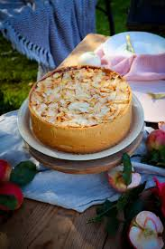

autumn-cheesecake
Home

Description
This is a rich apple cheesecake topped with sliced apples, cinnamon, and crunchy pecans. I love making this show-stopping dessert in the fall when apples are at their best.
Ingredients
Crust:
- 2 cups graham cracker crumbs
- 1 cup finely chopped pecans
- ½ cup unsalted butter, melted
- 6 tablespoons white sugar
- 1 teaspoon ground cinnamon
Filling:
- 4 (8 ounce) packages cream cheese, softened
- 1 cup white sugar
- 4 large eggs
- 1 teaspoon vanilla extract
Topping:
- 8 cups apples - peeled, cored and thinly sliced
- ⅔ cup white sugar
- 1 teaspoon ground cinnamon
- ½ cup chopped pecans
Steps
- Gather all ingredients.
- Preheat the oven to 350 degrees F (175 degrees C).
- To make the crust: Mix graham cracker crumbs, pecans, melted butter, sugar, and cinnamon together in a bowl until well combined.
- Press the graham cracker mixture into the bottom of a 9-inch springform pan. Bake in the preheated oven for 10 minutes. Remove from the oven; leave the oven on.
- To make the filling: Beat cream cheese and sugar in a mixing bowl with an electric mixer on medium speed until smooth. Add eggs, one at a time, beating well after each addition. Beat in vanilla extract. Pour filling into the baked crust.
- To make the topping: Place apples in a bowl. Stir sugar and cinnamon together in a smaller bowl; pour over apples and toss to coat. Spoon sugared apples over filling, then sprinkle pecans over top.
- uyu
- Bake in the oven until edges are puffed, 60 to 70 minutes. Run the tip of a table knife around the edges of the pan, set the pan on a wire rack, and allow the cheesecake to cool at room temperature, about 1 hour. Refrigerate until completely chilled, 4 hours to overnight.